용접기사 (2010-07-25 기출문제)
1과목: 기계제작법
1. 냉간가공에 의하여 경도 및 항복강도가 증가하나 연신율은 감소하는데 이 현상을 무엇이라 하나?
- 가공경화
- 탄성경화
- 표면경화
- 시효경화
(정답률: 47%)

2. 선반 가공에서 가공면의 표면거칠기 이론값을 구하는 식은? (단, 바이트의 노즈 반지름을 R, 1회전당 날의 이송량은 f이다)
- R2/8f
- f2/8R
- f/8R
- R/8f
(정답률: 92%)
3. CNC 머신에서 서보기구의 형식 중 모터에 내장된 타코제너레이터에서 속도를 검출하고 엔코더에서 위치를 검출하여 피드백 하는 제어방식?
- 개방회로 방식
- 반 폐쇄회로 방식
- 폐쇄회로 방식
- 디코더 방식
(정답률: 60%)
4. 주물의 결함에서 주물의 일부분에 불순물이 집중되어 석출되거나 가벼운 부분이 위에 뜨고, 무거운 부분이 밑에 가라앉아 굳어지거나 배합이 달라지는 현상은?
- 편석
- 수축공
- 기공
- 치수불량
(정답률: 알수없음)
5. 주강 ( Cast Steel )의 용해로로 주로 사용되며, 그 밖에 특수 주철 금속의 정련 작업과 합금의 제조에 이용되는 용해로는?
- 용선로
- 도가니로
- 전로
- 전기로
(정답률: 알수없음)
6. 굽힘선의 길이 300mm, 판 두께가 3mm인 연강판을 그림과 같이 90° 로 V형 굽힘가공을 하려고 한다. 다이견폭 (w) 이 판 두께의 8배일 때, 굽힘에 필요한 힘은 약 몇 kgf 인가? (단, 상형과 하형이 닿지 않는 자유굽힘으로 하고, 재료의 인장강도는 40 kgf/mm2 , 조정계수는 1.33 으로 한다)
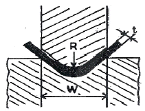
- 1995
- 2155
- 5985
- 15960
(정답률: 알수없음)
7. 강선의 냉강인발 중 가공경화가 나타나서 계속적인 작업이 어려울 때 조직을 연욕로 (lead bath) 중에서 항온변태를 일으켜 인발 가공 용이하게 만드는 열처리 방법은?
- 스페로다이징
- 마르퀜칭
- 파텐텡
- 완전 어닐링
(정답률: 34%)
8. 아크 용접봉에서 피복제의 역할이 아닌 것은?
- 용융금속의 탈산 작용을 한다.
- 질화 작용을 촉진한다.
- 용착금속에 필요한 원소를 공급한다.
- 용융금속의 급냉을 방지한다.
(정답률: 알수없음)
9. 바이트의 전방 여유각에 대한 설명 중 가장 옳은 것은?
- 설치각 (setting angle)과 같은 효과를 나타낸다.
- 여유각이 클수록 날 끝이 잘 부러지지 않는다.
- 절삭 칩 제거를 용이하게 한다.
- 바이트와 공작물간에 마찰이 적게 한다.
(정답률: 알수없음)
10. 두께 5mm의 연강판에 직경 10mm의 펀칭 작업을 하는데 크랭크 프레스 램의 속도가 10m/min 이라면 이 때 프레스에 공급되어야 할 동력은 약 몇 kw 인가? (단, 연강판의 전단강도는 294.3MPa이고, 프레스의 기계적 효율은 80%이다. )
- 약 9.63
- 약 13.52
- 약 15.54
- 약 21.32
(정답률: 알수없음)
11. 나사측정에서의 삼침법(Three wire method)이란?
- 나사의 바깥지름을 측정하는 법
- 나사의 피치를 측정하는 법
- 나사의 유효지름을 측정하는 법
- 나사의 골지름을 측정하는 법
(정답률: 50%)
12. 버니어 캘리퍼스에서 어미자의 최소눈금이 1mm이고, 49mm를 50등분하면 최소 측정값은 몇 mm인가?
- 0.02
- 0.⑤
- 0.06
- 0.09
(정답률: 70%)
13. 니켈, 크롬, 망간 등이 함유된 특수강에서 볼 수 있는 현상으로 담금질 온도에서 대기 속에 방랭하는 것만으로도 마텐자이트 조직이 생성되어 단단해지는 성질은?
- 공랭성
- 시효성
- 냉각성
- 자경성
(정답률: 알수없음)
14. 3개의 조가 동시에 개폐되어 원형 및 3의 배수각형의 공작물을 고정하기 쉬우며 스크롤 척 (Scroll chuck)이라고도 하는 척은?
- 단동 척
- 연동 척
- 양용 척
- 콜릿 척
(정답률: 알수없음)
15. 자유 단조에서 업 세팅 (up-setting)에 관한 설명으로 옳은 것은?
- 굵은 재료를 늘이려는 방향과 직각이 되게, 램으로 타격하여 길이를 증가시킴과 동시에 단면적을 감소시키는 작업이다.
- 재료를 축방향으로 압축하여 지름을 굵고 길이는 짧게하는 작업이다.
- 압력을 가하여 재료를 굽힘과 동시에 길이방향으로 늘어나게 하는 작업이다.
- 단조 작업에서 재료의 구멍을 뚫기 위해 펀치를 사용하는 작업이다.
(정답률: 알수없음)
16. 마이크로미터 측정면의 평면도 검사에 필요한 기기는?
- 다이얼 게이지
- 옵티컬 플랫
- 컴비네이션 세트
- 플러그 게이지
(정답률: 알수없음)
17. 전단 가공된 제품을 정확한 치수로 다듬질하거나 전단면을 깨끗하게 가공하기 위하여 시행하는 미소량의 전단 가공을 무엇이라고 하나?
- 셰이빙
- 트리밍
- 노칭
- 브로칭
(정답률: 54%)
18. 초음파 가공의 특징 설명이 아닌 것은?
- 납, 구리, 연강 등의 가공에 유리하다.
- 굴곡 구멍가공, 얇은 판 절단, 성형, 표면다듬질, 조각 등의 가공이 가능하다
- 가공물체에 가공변형이 남지 않는다.
- 부도체도 가공할 수 있다.
(정답률: 알수없음)
19. 방전가공의 전극 재질로 적다한 것은?
- 아연
- 구리
- 연강
- 다이아몬드
(정답률: 알수없음)
20. 교류아크 용접기에서 효율을 나타내는 식은?
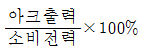
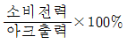
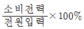
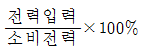
(정답률: 알수없음)
2과목: 재료역학
21. 그림과 같은 균일 단면 단순보의 일부에 균일 분포하중이 작용할 때 중앙점 C에서의 굽힘모멘트는 몇kN·m인가? (단, 굽힘 강성 EI는 일정하고, 보의 자중은 무시한다.)
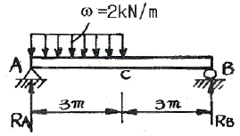
- 5
- 4. 5
- 4
- 3. 5
(정답률: 알수없음)
22. 그림과 같이 순수굽힘 상태에 있는 AB구간의 균일 단면보에서 굽힘에 의해 생긴 중립면의 곡률은? (단, 보의 굽힘강성 EI는 일정하고, 자중은 무시한다.)
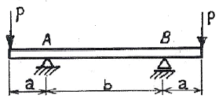
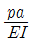
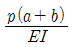
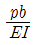
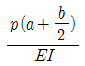
(정답률: 알수없음)
23. 다음과 같은 평면 응력 상태에서의 최대(σ1) 및 (σ2) 주응력은 몇 MPa 인가?
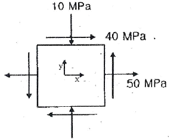
- σ1=70 , σ2=-30
- σ1=30 , σ2=-70
- σ1=70 , σ2=30
- σ1=-30 , σ2=-70
(정답률: 알수없음)
24. 균일 단면 외팔보의 자유단을 그림과 같이 스프링으로 지지한후 100N의 하중을 B점에 작용시켰다. B점에서 의 처짐량은 몇 mm인가? (단, 스프링 상수 k=5N/mm, 단면은 bxh=5mmx10mm, 탄성계수 E=200GPa이고 굽힘강성 EI는 일정하다. )
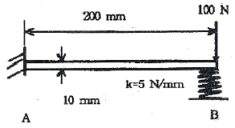
- 1.16
- 1.76
- 2.16
- 2.76
(정답률: 알수없음)
25. 집중 모멘트 M을 받고 있는 길이(L) 1m인 외팔보의 최대 처짐량을 1cm로 제한하려면, 최대 집중 모멘트 M은 몇 N·m 인가? (단, 단면은 한 변이 10cm이 정사각형이고, 탄성계수 (E)는 235GPa이다)
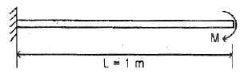
- 24516
- 29419
- 34323
- 39166
(정답률: 19%)
26. 그림과 같은 응력 상태를 모어(Mohr)의 응력원으로 도시하면 어느 것인가? (단, σ2<σ1)
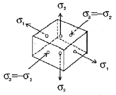
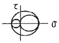
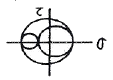
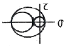
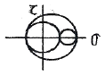
(정답률: 알수없음)
27. 그림과 같은 볼트에 축 하중 Q가 작용할 때, 볼트 머리부의 높이 H는 볼트 지름의 몇 배가 되어야 하는가? (단, 볼트 머리부에서 축 하중 방향으로의 전단응력은 볼트 축에 작용하는 인장 응력의 1/2 배까지 허용한다. )
- 1/4배
- 3/5배
- 3/8배
- 1/2배
(정답률: 29%)
28. 지름이 25mm이고 길이가 6m인 강봉의 양쪽 단에 100kN의 인장력이 작용하여 6mm가 늘어났다. 이때 응력과 변형률은? (단, 재료는 선형 탄성 거동을 한다. )
- 203.7 MPa, 0.001
- 203.7 kPa, 0.001
- 203.7 MPa, 0.01
- 203.7 kPa, 0.01
(정답률: 알수없음)
29. 비틀림 모멘트 T를 받고 봉의 기링 L인 부재에 발생하는 순수전단(pure shear) 상태에서의 비틀림 변형에너지 U는? (단, 비틀림 강성은 GJ이다.)
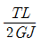
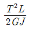
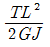
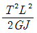
(정답률: 50%)
30. 그림과 같은 불균일 분포하중을 부분적으로 받는 균일단면 보에서 A점의 반력은 몇 kN 인가? (단, 보의 자중은 무시하고, 굽힘강성 EI는 일정하다.)
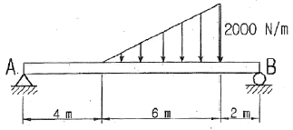
- 1
- 2
- 3
- 4
(정답률: 40%)
31. 그림과 같은 트러스 구조물에서 B점에서 10kN의 수직 하중을 받으면 BC에 작용하는 힘은 몇 kN인가?
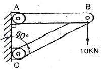
- 20
- 17.32
- 10
- 8.66
(정답률: 알수없음)
32. 길이 L의 균일 단면 막대기에 굽힘 모멘트 M이 그림과 같이 작용하고 있다. 이 막대에 저장된 탄성 변형 에너지는? (단, 막대기의 굽힘강성 EI는 일정하고, 단면적은 A이다.)
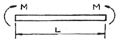
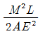
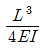
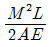
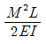
(정답률: 알수없음)
33. 양단이 핀으로 고정되어 있고, 정사각형의 단면 25mm * 25mm, 길이 1. 8m인 기둥에서 오일러 식에 의한 임계하중은 몇 Kn 인가? (단, 탄성계수 E = 70 GPa 이다.)
- 1.30
- 2.60
- 3.47
- 6.94
(정답률: 30%)
34. 반지름이 r인 중심축에 토크 T가 작용하고 있다. 작용토크의 1/3을 지지하는 내부 코어(inner core)의 반지름(r')을 구하면? (단, 재질은 선형 탄성 균질재이다.)
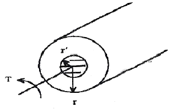
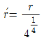
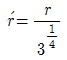
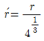
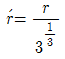
(정답률: 34%)
35. 그림과 같은 균일단면을 갖는 부정정보가 단순 지지단에서 모멘트 Mo를 받는다. 단순 지지단에서의 반력 Ra는? (단, 굽힘강성 EI는 일정하고. 자중은 무시한다.)
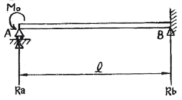
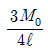
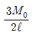
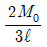
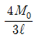
(정답률: 55%)
36. 다음과 같이 양단을 고정한 길이 L, 단면적 A의 막대를 △T 만큼 온도를 올렸을 때 막대에 생기는 응력 σ 는? (단, 막대의 탄성계수를 E, 선팽창 계수를 α 라 한다.)
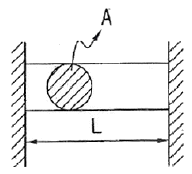
- σ=-Eα△T
- σ=-Eα2△TA
- σ=-Eα△TL
- σ=-Eα△TL2
(정답률: 46%)
37. 바깥지름 8cm, 안지름 6cm의 속이 빈 축에 7kN·m의 비틀림 모멘트가 작용하고 있다. 이때 발생하는 최대 비틀림 응력을 구하면 약 몇 MPa 인가?
- 43.8
- 53.8
- 63.8
- 101.9
(정답률: 30%)
38. 그림과 같이 강체 판 BC가 두 개의 탄성 막대 AB및 CD에 매달려 있다. 100kN의 하중이 작용한 후 강체 관 BC의 방향은? (단, AB의 단면적은 2cm2, CD의 단면적은 1cm2이며, 두 막대의 탄성계수는 모두 200 GPa 이다.)
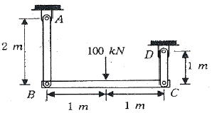
- 수평을 유지한다.
- 약 0.01° 만큼 좌측으로 기운다.
- 약 0.001° 만큼 우측으로 기운다.
- 약 0.001° 만큼 좌측으로 기운다.
(정답률: 42%)
39. 도심의 축에 대한 단면 2차모멘트가 가장 큰 보의 단면은?
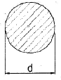
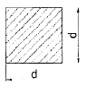
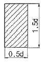
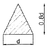
(정답률: 알수없음)
40. 다음 단면에서 도심의 y축 좌표는 얼마인가?
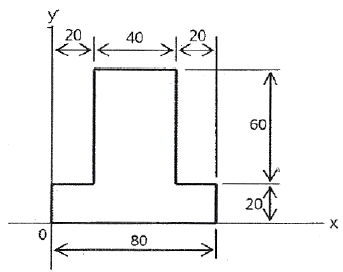
- 30
- 34
- 40
- 44
(정답률: 알수없음)
3과목: 용접야금
41. 강 용접부의 노치취성을 억제하는 원소는?
- C
- Mn
- P
- S
(정답률: 알수없음)
42. 용접 열영향부의 조직과 기계적 성질에 가장 큰 영향을 주는 요인에 포함되지 않는 것은?
- 용접입열
- 예열, 후열의 유무
- 모재의 화학조성
- 환기장치
(정답률: 알수없음)
43. 페라이트 조직의 특성으로 맞는 것은?
- Fe3C금속간 화합물이다.
- 담금질 열처리에 의해 경화가 된다.
- 시멘타이트에 비해 매우 강하다.
- 상온에서 강자성이다.
(정답률: 알수없음)
44. 은점(fish ete)에 대한 설명 중 틀린 것은?
- 용착금속 결함의 하나이다.
- 은점은 중심에서 보통 작은 기공, 슬래그섞임 등이 있다.
- 용착금속의 연신율을 증가시킨다.
- 파단면은 원 또는 타원형의 은백색의 취약한 파면이다.
(정답률: 77%)
45. 아크전압 : E[V], 아크전류: I[A], 봉전시간 : t[S], 열효율 : η[%]라 할 때 용접입열 [H]는?
- H=EItη
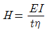
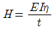
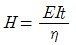
(정답률: 46%)
46. 용접과정의 화학반응의 특성으로 맞는 것은?
- 온도가 높고 시간이 길다.
- 온도가 낮고 시간이 길다.
- 온도가 낮고 시간이 짧다.
- 온도가 높고 시간이 짧다.
(정답률: 알수없음)
47. 용접부에 혼입되는 수소와 가장 관련이 적은 용접 결함은?
- 저온균열(cold cracking)
- 기공(blow hole)
- 은점(fish eye)
- 고온균열(hot cracking)
(정답률: 알수없음)
48. 내열합금에서 균열이 발생하기 쉬운 원인이 아닌 것은?
- 시효속도가 지연된 경우
- 융접입열이 과대한 경우
- 구속도가 높은 경우
- 인장연성(引張延性)이 향상된 경우
(정답률: 알수없음)
49. 금속재료가 연성파괴에서 취성파괴로 변화하는 온도범위를 무엇이라 하는가?
- 임계온도
- 천이온도
- 층간온도
- 변태온도
(정답률: 알수없음)
50. 탄소강 중에서 인(P)이 미치는 영향으로 틀린 것은?
- 결정립을 조대화 시킨다
- 강도와 경도를 증가시킨다
- 실온에서 충격치를 저하시켜 상온 취성의 원인이 된다
- 연신율을 증대시킨다
(정답률: 알수없음)
51. 다음 중 면심입방격자 구조(FCC)인것은?
- β -Cr
- α -Fe
- ϒ -Fe
- α -Cr
(정답률: 25%)
52. 황이 층상으로 존재하는 강을 서브머지드 아크 용접할 때 일어나며, 고온균열의 일종에 속하는 것은?
- 설퍼 균열
- 라미네이션 균열
- 매크로 균열
- 비드 밑 균열
(정답률: 알수없음)
53. 용융 슬래그를 구성하는 산화물은 염기성, 중성 및 산성의 3종류로 구분된다. 산성 산화물에 속하는 것은?
- MgO
- SIO
- FeO
- MnO
(정답률: 43%)
54. 탄소강은 200~300℃에서 가장 취약하게 되는데, 이것을 무엇이라 하는가?
- 저온취성
- 천이취성
- 파괴취성
- 청열취성
(정답률: 64%)
55. 용접부 저온균열은 용접후 2~3시간 정도에서 발생하는 것이 보통이나 상온에서도 수소의 확산이 균열에 영향을 주는 균열은?
- 자연균열
- 고온균열
- 모재균열
- 벽개균열
(정답률: 64%)
56. 후판의 용접비드 중심부에서의 주상정(住狀晶)에 관한 설명 중 옳지 않은 것은?
- 용접속도가 클수록 주상정은 용접방향으로 굽힌다.
- 용접비드 두께가 클수록 주상정은 직립(直立)에 가깝다.
- 용접비드 전체 두께가 작을수록 주상정은 용접방향으로 굽힌다.
- 알루미늄과 같이 온도확산율이 큰 재료에서는 주상정은 수평방향에 가까워진다.
(정답률: 19%)
57. 마르텐자이트(Martensite)조직의 본질은?
- 오스테나이트 속에 탄소가 과 포화된 조직
- 페라이트 속에 탄소가 과 포화된 조직
- 펄라이트와 페라이트의 혼합조직
- 트루스타이트와 소르바이트의 중간 조직
(정답률: 알수없음)
58. 강의 담금질 조직을 냉각속도에 따라 분류 할 때 해당되지 않는 것은?
- 소르바이트
- 트루스타이트
- 페라이트
- 마르텐자이트
(정답률: 42%)
59. 18(Cr)-8(Ni)형 스테인리스강의 특징으로 틀린 것은?
- 내산 및 내식성이 13% Cr 스테인레스강보다 우수하다.
- 강자성체이다
- 인성이 좋으므로 가공이 용이하다
- 산과 알칼리에 강하다
(정답률: 알수없음)
60. 용접부에서 발생되는 균열의 원인이 아닌 것은?
- 수축에 의한 압축응력
- 수축에 의한 인장응력
- 팽창에 의한 전단응력
- 팽창에 의한 굽힘응력
(정답률: 알수없음)
4과목: 용접구조설계
61. 용접물은 용접 중에 용착금속의 수축과 열영향부의 국부적가열 및 냉각을 받으므로 용접부에서 발생하는 체적변화는 구조물의 용접변형의 원인이 된다. 용접 후 용접변형의 종류가 아닌 것은?
- 역변형
- 종수축
- 회전변형
- 횡수축
(정답률: 알수없음)
62. 응력 제거 어닐링(Stress-relief annealing)효과가 아닌 것은?
- 용접 잔류응력의 제거
- 응력부식에 대한 저항력 증대
- 크리프 강도의 향상 및 충격 저항의 감소
- 용착금속 중의 수소 제거에 의한 연성의 증대
(정답률: 알수없음)
63. 크리프강도(creep strength)는 시간에 따른 여러가지 변형역을 가지고 있는데 이 변형역에 해당 되지 않는 것은?
- 천이 크리프역
- 순간 크리프역
- 정상 크리프역
- 가속 크리프역
(정답률: 73%)
64. 응력부식에 관한 설명으로 틀린 것은?
- 응력이 존재하는 상태에서 재료의 부식이 촉진되는 것이다.
- 용접 잔류응력에서는 항복점에 가까운 높은 인장 능력이 존재함에 따라 이것이 응력부식의 원인이 된다.
- 재질과 응력의 크기와 온도 등이 크게 영향을 미친다.
- 동합금, 알루미늄합금, 연강에서는 응력부식이 발생하지 않는다.
(정답률: 알수없음)
65. 용접공수(熔接工數)에 해당 되지 않는 것은?
- 본용접공수
- 가용접공수
- 간접공수
- 운반공수
(정답률: 알수없음)
66. 용접부에 발생하는 잔류응력 완화법이 아닌 것은?
- 피닝법
- 기계적 응력 완화법
- 스카핑법
- 저온 응력 완화법
(정답률: 90%)
67. 용접부 부근의 냉각속도에 관한 설명으로 틀린 것은?
- 후판의 냉각속도는 박판 때보다 빠르다.
- 열량을 일정하게 할 경우 열전도율이 클수록 냉각 속도가 빠르다.
- 맞대기 용접이음 보다 T형 필릿 용접이음이 냉각 속도가 느리다.
- 구리는 연강보다 열전도율이 크므로 냉각속도가 빠르다.
(정답률: 알수없음)
68. 용접이음의 단점으로 맞는 것은?
- 제품의 성능과 수명이 향상되나 이종재료는 접합할 수 없다.
- 수밀, 기밀 등의 신뢰성이 높은 시공을 할 수 없다.
- 용접 시 급열, 급냉에 의한 변형 및 잔류응력이 발생한다.
- 저온취성이 생길 우려가 없다.
(정답률: 알수없음)
69. 용접부의 결함, 기계부품의 홈 및 구멍과 같은 모양의 변화가 있으면 그 부분에서 국부적으로 응력이 증가하는 현상을 무엇이라 하는가?
- 크리프 현상
- 응력집중 현상
- 스캘롭 현상
- 고온특성 현상
(정답률: 84%)
70. 용접 변형의 방지법 중 잔류응력이 가장 많이 남는 방법은?
- 구속력이 큰 지그를 사용할 것
- 용접 순서를 충분히 고려할 것
- 예열 또는 후열을 할 것
- 용접 열을 억제할 것
(정답률: 60%)
71. 그림과 같이 둥근 단면 강재에 비틀림 응력이 작용을 하고 전 둘레 용접을 할 때 용접선에 생기는 응력은 약 얼마인가? (단, 강재의 직경 = 100mm, 토오크(T) = 1000kgf-m로 한다)
- 48.6kgf/mm2
- 54.3kgf/mm2
- 63.7kgf/mm2
- 70.5kgf/mm2
(정답률: 알수없음)
72. 필릿 용접치수를 결정하는데 사용되는 다음 그림과 같은 선형의 중심축에 단면 2차 모멘트 I를 구하는 식으로 옳은 것은? (단, t=1 임)
(정답률: 알수없음)
73. 연속적인 종파를 사용하여 두께측정 및 결함탐상에 적용하는 초음파 탐상 시험법은?
- 극간법
- 펄스 반사법
- 투과법
- 공진법
(정답률: 알수없음)
74. 수직으로 4500N의 힘이 작용하는 부분에 수평으로 맞대기 용접을 하고자 하는데 용접부의 형상은 판두께 6mm, 용접선의 길이 250mm로 하려고 할 때 이음부에 발생하는 인장응력은 약 몇 N/mm2 인가?
- 5N/mm2
- 3N/mm2
- 4N/mm2
- 6N/mm2
(정답률: 60%)
75. 그림과 같이 I형 보에서 알맞은 용접 순서는?
- a→b→c→d
- a→b→d→c
- a→d→c→b
- a→c→b→d
(정답률: 알수없음)
76. 단순 굽힘을 받고 있는 맞대기 용접에서 완전용입상태로 용접을 할 때, 사용할 수 있는 기본식으로 옳은 것은? (단, σ는 최대 굽힘응력, Z는 용접이음의 단면계수, M는 최대 굽힘모멘트 이다.)
- M=σZ
(정답률: 47%)
77. 서브머지드 아크 용접에 균열이 발생하였다. 그 원인으로 가장 적당한 것은?
- 용제의 살포량이 과부족 했다
- 열영향부가 급열, 급냉 되었다.
- 망간 함유량이 많은 와이어를 사용하였다
- 용제에 습기가 많았다
(정답률: 알수없음)
78. 열영향부의 균열감수성을 시험하기 위한 방법으로 입열량, 용접재료의 수소량, 응력, 재질의 영행 등을 알아보는 시험법은?
- lmplant시험법
- 가변저항속도 균열시험법
- TRC(Tensile Restraint Cracking) 시험법
- RRC(Rigid Restraint Cracking) 시험법
(정답률: 알수없음)
79. 다음 그림에서 화살표로 표시한 것을 무엇이라고 하는가?
- 엔드탭
- 용접홀더
- 스캘롭
- 스트롱백
(정답률: 67%)
80. 동은 용융금속에 응고를 늦추기 위하여 예열온도는 몇도(℃)가 가장 적당한가?
- 150℃이하
- 900~1000℃
- 400~500℃
- 800~900℃
(정답률: 알수없음)
5과목: 용접일반 및 안전관리
81. 고 진동 중에서 텅스텐 필라멘트를 사용하는 용접은?
- 원자수소 용접
- 스터트 용접
- 테르밋 용접
- 전자빔 용접
(정답률: 알수없음)
82. 서브머지드 아크 용접(submerged arc welding)에 대한 설명 중 옳은 것은?
- 유니온 멜트 용접이라고도 하며 용접부의 품질이 좋은 용접법이다.
- 용접 전원으로 직류(DC)만을 사용한다.
- 주로 비철재료의 용접에만 쓰이는 것이다.
- 아크 용접이기는 하지만 실제로 아크의 발생을 수반하지 않는 용접법이다.
(정답률: 80%)
83. 아세틸렌이 가장 많이 용해되는 것은?
- 물
- 아세톤
- 알콜
- 벤젠
(정답률: 알수없음)
84. 경납땜의 일종으로 볼 수 있으며, 모재와 같은 계통의 공정합금(eutectic alloy)으로 된 용접봉을 사용하는 용접법은?
- 저온 용접
- 접착 용접
- 용사(표면 용접법)
- 플라스틱 용접
(정답률: 알수없음)
85. 아세틸렌가스의 폭발성에 대한 설명으로 가장 거리가 먼 것은?
- 아세틸렌은 매우 타기 쉬운 기체로서 화기에 접근 시키면 폭발할 위험이 있다
- 아세틸렌은 공기 중에서 가열하여 406~408℃ 부근에 도달하면 자연 발화를 하고 5⑤~515℃가 되면 폭발이 일어난다.
- 아세틸렌가스는 구리, 은, 수은 등과 접촉된 화합물 즉 아세틸렌구리, 아세틸렌수은 등은 건조상태의 120℃ 부근에서 폭발성을 가지게 된다.
- 아세틸렌이 산소와 혼합되면 폭발성이 증가되므로 아세틸렌 35%와 산소 65%부근이 가장 폭발위험이 크다.
(정답률: 알수없음)
86. 일렉트로 가스 아크 용접의 특징 중 틀린 것은?
- 용융속도는 수동용접의 4~5배정도 이다.
- 용접장치가 간단하고 취급이 쉽다.
- 판 두께가 얇을수록 경제적이다.
- 판 두께에 관계없이 단층으로 상진 용접한다.
(정답률: 알수없음)
87. 선창이나 교각 등 밀폐된 장소에서 절단 작업을 할때 아세틸렌 가스나 에틸렌 가스를 사용하는 주된 이유는?
- 공기보다 비중이 무겁기 때문에
- 공기보다 비중이 가볍기 때문에
- 절단 개시시간이 길기 때문에
- 불꽃의 속도가 느리기 때문에
(정답률: 알수없음)
88. 용접작업의 안전수칙 중 틀린 것은?
- 고소(高所)작업 중 갑자기 일어나지 말 것
- 전격방지기가 설치된 용접기를 사용할 것
- 용접 작업은 가연성 물질이 있는 안전한 장소를 선택할 것
- 더운 계절이나 고온 작업시에도 절대로 작업복을 벗지말 것
(정답률: 86%)
89. 탄산가스 아크 용접결함 중 기공이 발생하는 원인과 가장 거리가 먼 것은?
- CO2 가스에 공기가 혼입되어 있다.
- CO2 가스 유량이 부족하다.
- 노즐이 스패터로 메워져 있다.
- 팁의 치수가 부적합하다.
(정답률: 70%)
90. 피복 아크 용접에서 용접속도와 관련된 설명으로 틀린 것은?
- 모재에 대한 용접선 방향의 아크 속도를 용접속도라 한다.
- 용접속도는 모재의 재질, 이음모양, 용접봉의 종류 등에 따라 달라진다.
- 아크전류와 아크전압을 일정하게 유지하고 용접 속도를 증가시키면 비드 폭은 넓어지고 용입은 깊어진다.
- 용입의 정도는 용접 전류 값을 용접속도로 나눈 값에 따라 결정되므로 전류가 높을 때 용접 속도는 증가한다.
(정답률: 67%)
91. 매시 심용접을 올바르게 설명한 것은?
- 용접할 2개의 금속단면을 가볍게 접촉시켜 대전류를 통하여 집중적으로 접촉점을 가열하면서 용접을 한다.
- 모재를 맞대어 놓고 이음부에 동일 재질의 박판을 대고 가압하여 용접을 한다.
- 판 끝을 맞대어 가압하고 2개의 전극을 롤러로 맞대 면을 통전하여 용접을 한다.
- 이음부의 겹침을 모재 두께 정도로 하여 겹쳐진 폭 전체를 가압하여 용접을 한다.
(정답률: 알수없음)
92. 가스 용접장치의 연결 시 주의사항으로 틀린 것은?
- 가스집중장치는 화기를 사용하여 설비에서 1m이상 떨어진 곳에 설치해야 한다.
- 콕 등의 접합부에는 패킹을 사용하며 접합면을 서로 밀착시켜 가스의 누설이 되지 않아야 한다.
- 아세틸렌가스 집중장치 시설에는 소화기를 준비한다.
- 작업종료 시 메인밸브 및 콕 등을 완전히 잠가준다.
(정답률: 86%)
93. 기계적 에너지를 이용하는 용접은?
- 테르밋 용접
- 플라스마 용접
- 냉간 압접
- 레이져 용접
(정답률: 알수없음)
94. 용접기의 사용율을 나타내는 공식으로 맞 는 것은?
(정답률: 알수없음)
95. 용접을 크게 분류할 때 아크 용접에 해당되는 것은?
- 원자 수소 용접
- 마찰 용접
- 전자 빔 용접
- 저항 용접
(정답률: 알수없음)
96. 2차 무부하 전압 80V, 아크전압 30V, 아크전류 250A인 교류 용접기를 사용할 때 역률과 효율은 각각 얼마인가? (단, 내부손실은 2.5kW이다)
- 효율 = 75%, 역률 = 50%
- 효율 = 70%, 역률 = 45%
- 효율 = 50%, 역률 = 75%
- 효율 = 45%, 역률 = 70%
(정답률: 알수없음)
97. 직류 정극성(DCSP)을 설명한 것중 틀린 것은?
- 모재 쪽에 양극(+)을 연결한다.
- 모재의 용입이 역극성에 비해 깊다.
- 양극에서 발열이 크다.
- 용접봉의 녹음이 역극성에 비해 빠르다.
(정답률: 알수없음)
98. 동작기구가 수직면 또는 수평면내에서 선회한 회전영역이 넓고 팔이 기울어져 상하로 움직이므로 대상 물의 손끝자세를 맞추기 쉬워 점용접용 로봇에 많이 사용되는 로봇은?
- 직각 좌표 로봇
- 원통 좌표 로봇
- 관절 좌표 로봇
- 극 좌표 로봇
(정답률: 알수없음)
99. 교류 아크 용접기에 해당 되지 않는 것은?
- 가동 코일형
- 정류기형
- 가포화 리액터형
- 탭 전환형
(정답률: 알수없음)
100. 화재의 분류에서 전기화재의 분류에 해당되는 것은?
- A급 화재
- B급 화재
- C급 화재
- D급 화재
(정답률: 50%)